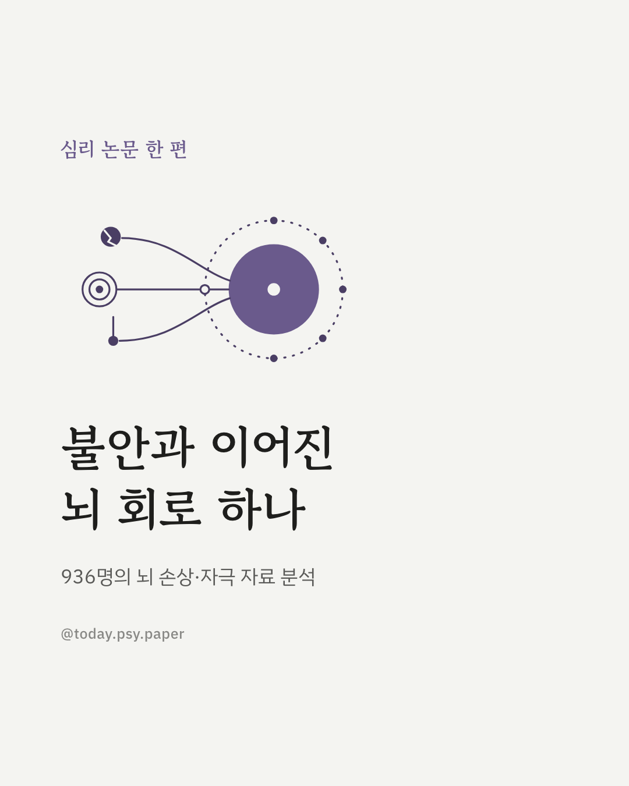
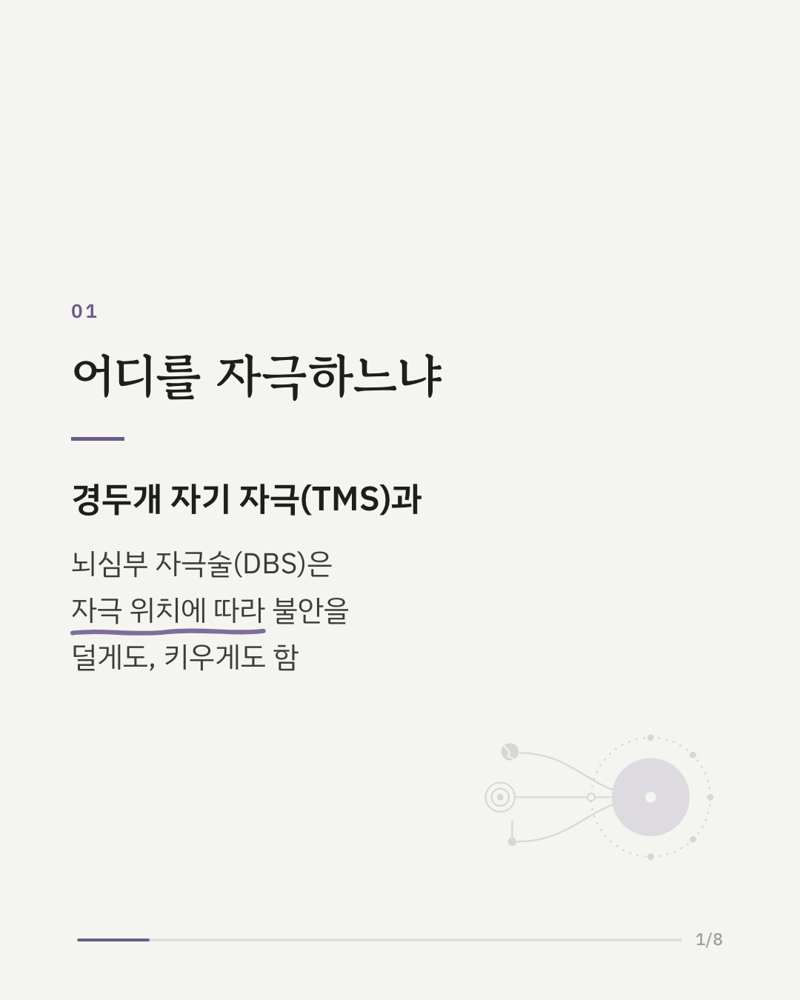
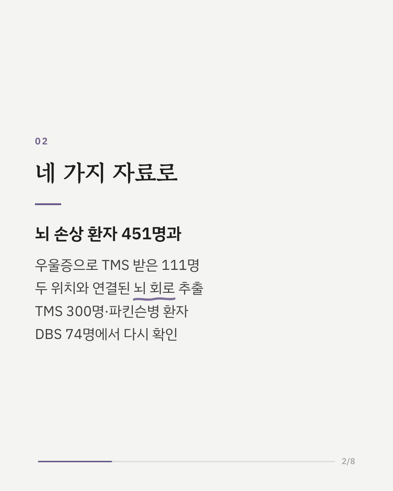
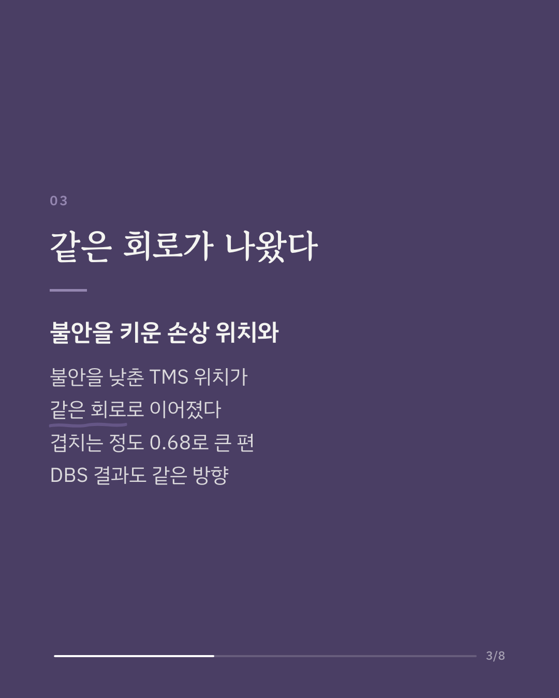
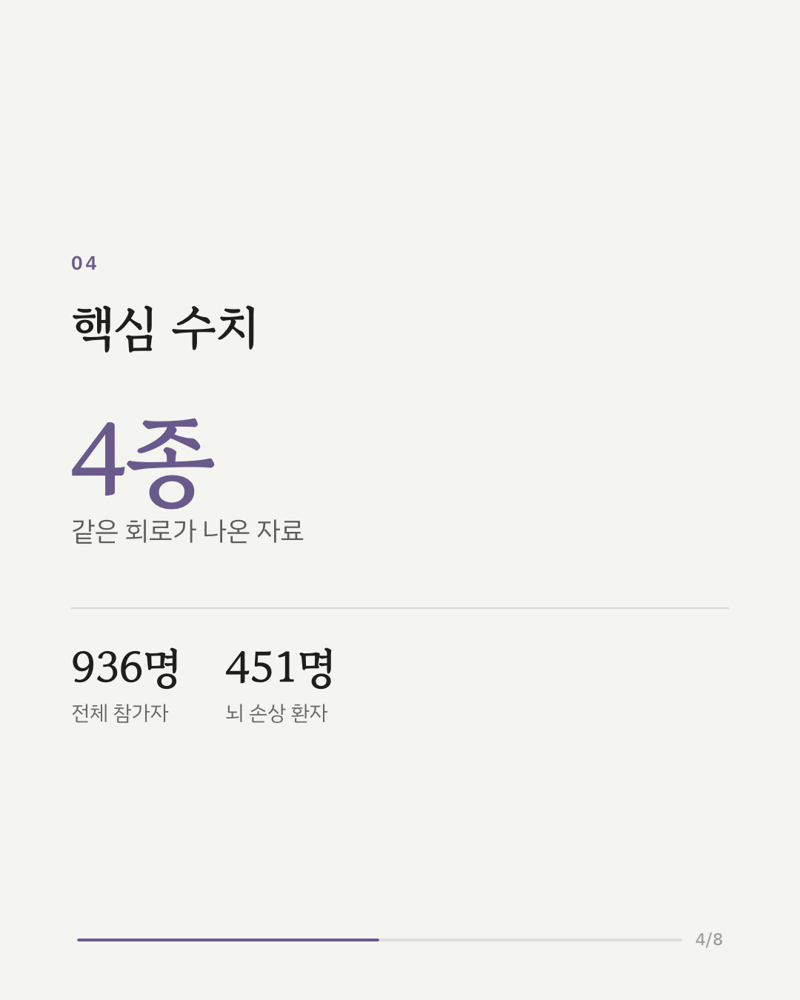
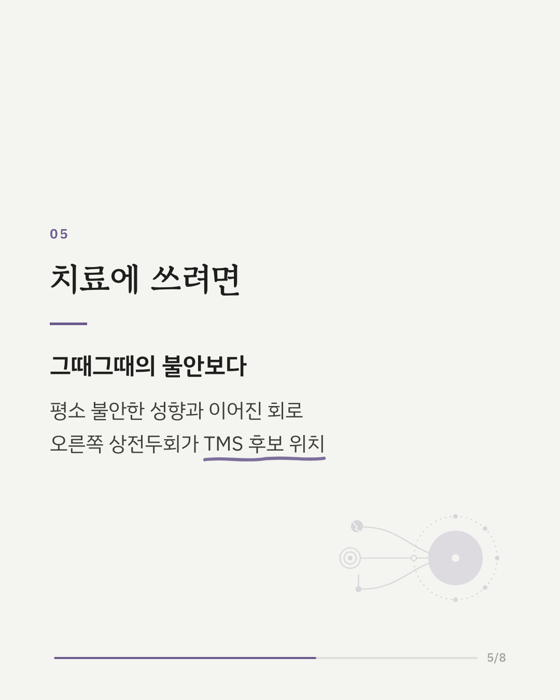
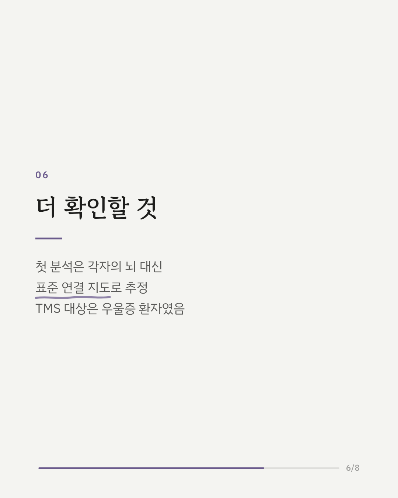
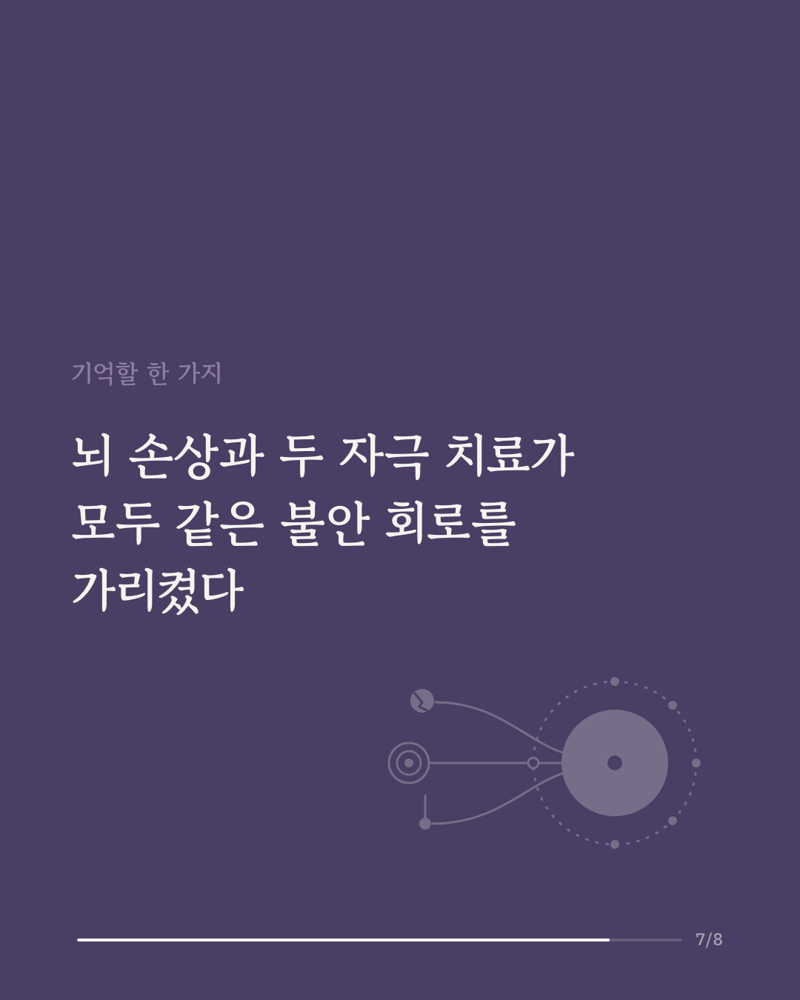
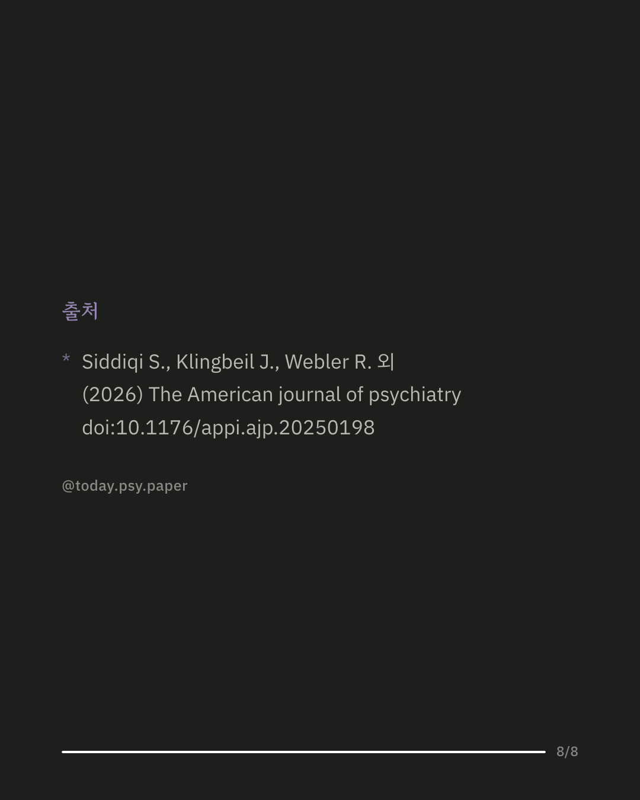

뇌의 어느 부위를 자극하느냐에 따라 불안이 줄기도 하고 오히려 늘기도 합니다. 이 연구는 경두개 자기 자극(TMS)과 뇌심부 자극술(DBS)로 불안을 낮출 수 있는 뇌 회로를 찾기 위해 936명의 자료를 함께 분석했습니다. 먼저 뇌 손상 환자 451명과 우울증으로 TMS를 받은 111명의 자료에서 각 위치와 연결된 회로를 그렸습니다. 불안을 키운 손상 위치와 불안을 낮춘 TMS 위치는 비슷한 회로로 이어졌고, 겹치는 정도는 큰 편이었습니다. 별도의 TMS 환자 300명에서도 이 회로와의 연결이 불안 변화와 관련이 있었고, 파킨슨병 환자 74명에서는 DBS 위치가 이 회로와 겹칠수록 불안이 더 늘었습니다. 이 회로는 그때그때의 불안보다 평소 불안해하는 성향과 더 관련이 있었고, TMS 후보 위치로 오른쪽 상전두회가 제안되었습니다. 다만 첫 분석은 각자의 뇌가 아닌 표준 연결 지도로 추정했고, TMS 자료는 불안 장애가 아닌 우울증 환자에게서 나왔습니다. 출처: The American Journal of Psychiatry (2026), 'Convergent Network Localization of Brain Stimulation Targets for Trait Anxiety' DOI: 10.1176/appi.ajp.20250198 #임상심리 #정신건강정보 #심리학연구 #논문리뷰 #불안장애 #기질불안 #뇌과학 #경두개자기자극
python3 publish.py 42415252